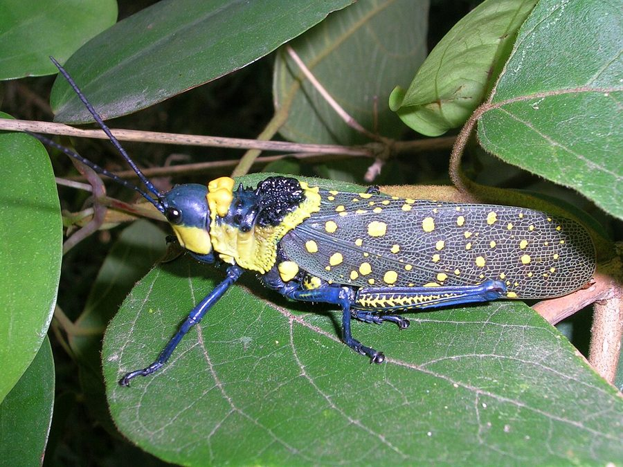

स्पॉटेड कॉफ़ी ग्रासहॉपरSpotted Coffee Grasshopper
Aularches miliaris · Pyrgomorphidae · INS-0289

- Scientific name वैज्ञानिक नाम
- Aularches miliaris (Linnaeus, 1758)
- Family कुल
- Pyrgomorphidae
- Hindi हिंदी
- स्पॉटेड कॉफ़ी ग्रासहॉपर
- Local names स्थानीय नाम
- spotted coffee grasshopper
- Status here यहाँ की स्थिति
- native
- Movement आवागमन
- Resident, here all year
- Known from कहाँ दर्ज
- Others have published records from the wider Awadh–Purvanchal plain, none yet from Basti–Ayodhya अवध–पूर्वांचल से दूसरों के प्रकाशित अभिलेख, बस्ती–अयोध्या से अभी नहीं
- IUCN IUCN
- not evaluated
- Review समीक्षा
- not yet reviewed
When to look कब देखें
Expected mainly in May, June, July, August, September, October, November. मुख्यतः मई, जून, जुलाई, अगस्त, सितंबर, अक्टूबर, नवंबर में अपेक्षित।
Tell it apart from इनसे अलग पहचानें
स्पॉटेड कॉफ़ी ग्रासहॉपर / Spotted Coffee Grasshopper
Aularches miliaris (Linnaeus, 1758) — Pyrgomorphidae
स्पॉटेड कॉफ़ी ग्रासहॉपर — गाढ़े काले-पीले धब्बों और चमकीले लाल उदर वाला एक विषैला टिड्डा, जो ख़तरे के समय झागदार दुर्गंधयुक्त स्राव छोड़ता है।
Quick Identification त्वरित पहचान
| Feature | Description |
|---|---|
| Pronotum | Heavily tuberculate, bright yellow or orange with black grooved sulci |
| Head | Dark greenish-black or deep slate with smooth rounded vertex |
| Forewings (Tegmina) | Dark olive-green to blackish, densely spotted with distinct yellow dots |
| Abdomen | Bright crimson or scarlet with narrow black transverse bands |
| Legs | Stout, dark brownish-black, hind femora moderately thickened |
| Secretion | Emits bubbly, foul-smelling defensive foam from thoracic spiracles |
Field tip: The contrasting yellow-spotted black tegmina and bright crimson abdomen make this heavy grasshopper unmistakable; sluggish and reluctant to fly.
हिंदी: खुरदुरी पीली छाती, काले पंखों पर पीले गोल धब्बे और चमकीला लाल-काला धारीदार पेट इस टिड्डे की मुख्य पहचान है।
Morphology आकारिकी
Measurement not available in consulted sources.
A large, stout, heavily built pyrgomorphid grasshopper displaying vivid aposematic warning coloration throughout the adult body. The head is relatively broad, subconical, and smooth on the vertex, typically dark greenish-black or slate grey with a yellowish frontal ridge. The compound eyes are large, oval, and slightly prominent, situated laterally below the vertex. Antennae are filiform, moderate in length, composed of dark cylindrical segments with pale yellowish tips on certain apical joints.
The pronotum is remarkably swollen, saddle-shaped, coarsely rugose and tuberculate, bearing prominent dorsal conical bumps and distinct transverse sulci; its surface is bright saffron yellow to deep orange with black depressions, margins, and lateral lobes. The tegmina are leathery, broad, overlapping along the dorsal midline, colored dark olive-green to dull blackish-brown and speckled throughout with numerous rounded sulfur-yellow spots. The hind wings are membranous, tinted dusky or smoky brownish with a slight reddish basal flush.
The abdomen is brightly colored crimson to scarlet red, marked transversely with contrasting black segmental rings and lateral dark patches. The legs are robust and dark; the hind legs possess thickened femora adapted for deliberate hopping rather than sustained jumping, with spinose hind tibiae. Both sexes are similarly marked, though females are noticeably larger and more robust than males.
हिंदी: इसका शरीर भारी, छाती उभारदार और खुरदुरी पीली, पंख काले-हरे जिन पर पीले धब्बे और पेट चमकीला लाल होता है जिस पर काली पट्टियां बनी होती हैं।
Behaviour & Ecology व्यवहार और पारिस्थितिकी
Aularches miliaris is a diurnal, slow-moving grasshopper that relies on chemical defense and warning coloration rather than agile escape. When molested or handled, it does not immediately leap; instead, it raises its tegmina, arches its bright abdomen, and produces a hissing sound accompanied by the discharge of a copious, foul-smelling, acrid yellowish foam from defensive glands near the metathoracic spiracles (Kumar 2025). This foam contains toxic secondary metabolites, deterring most mammalian and avian predators.
The nymphs exhibit striking gregarious behaviour, clustering by hundreds on tree trunks, fence posts, and large leaves during early instars. Adults are generally solitary or found in loose aggregations on host trees. Flight is clumsy, heavy, and limited to short fluttery distances between foliage.
हिंदी: यह दिन में सक्रिय रहने वाला सुस्त टिड्डा है। छेड़े जाने पर यह उड़ने के बजाय अपनी छाती से बदबूदार झाग छोड़ता है और फुफकार जैसी आवाज़ निकालता है।
Life Cycle / Phenology जीवन चक्र
Breeding begins following the onset of the monsoon rains. Mating pairs remain coupled for extended periods on foliage during late August and September. The female deposits several egg pods into damp, undisturbed sandy loam or humus-rich soil near tree bases.
The eggs remain dormant in the soil throughout the dry winter and summer months, undergoing diapause until stimulated by pre-monsoon showers in May or June. Nymphs hatch synchronously in dense aggregations. Early instar nymphs are dark and feed gregariously on low weeds and shoots, molting through several nymphal stages before dispersing onto canopy foliage as winged adults in late monsoon.
हिंदी: बरसात के दिनों में प्रजनन होता है। मादा मिट्टी में अंडों की थैलियां दबा देती है। अगली गर्मियों की पहली बारिश में बच्चे एक साथ झुंड बनाकर निकलते हैं।
Host Plants or Prey आहार
The species is a broad polyphagous folivore feeding on foliage of a wide variety of trees, shrubs, and plantation crops.
हिंदी: यह अनेक प्रकार के पेड़ों और झाड़ियों की पत्तियां खाता है।
Predators / Natural Enemies शत्रु
Due to toxic chemical defenses and aposematic coloration, adult grasshoppers face few vertebrate predators. However, specialized parasitoid flies (Sarcophagidae) and parasitic mites attack adults, while entomopathogenic fungi attack clusters of nymphs during humid monsoon months. Ground-dwelling predatory carabid beetles and rodents dig up buried egg pods. Insectivorous birds usually reject adults after tasting the noxious foam.
हिंदी: विषैले स्राव के कारण पक्षी इसे खाने से बचते हैं। परजीवी मक्खियां और जमीन में रहने वाले कीड़े इसके अंडों और बच्चों को नष्ट करते हैं।
Agricultural / Human Relevance कृषि प्रासंगिकता
In southern India and Sri Lanka, Aularches miliaris occasionally undergoes localized population outbreaks that defoliate teak plantations and coffee estates. The defensive foam can irritate sensitive human skin and mucous membranes, so handling should be done with care.
हिंदी: दक्षिण भारत और श्रीलंका में कभी-कभी इसका प्रकोप सागौन और कॉफ़ी के बागानों की पत्तियाँ खा जाता है। इसका झाग त्वचा पर जलन कर सकता है।
Expected Locally स्थानीय रूप से अपेक्षित
Not a field record. Written from published accounts for eastern Uttar Pradesh. No confirmed local sighting yet — if you have seen it, that is what the atlas needs.
अभी तक स्थानीय पुष्टि नहीं। यह विवरण प्रकाशित स्रोतों से है, किसी अवलोकन से नहीं।
GBIF holds published records from the wider Awadh–Purvanchal plain, none yet from Basti–Ayodhya. Expected in mixed orchards, village woodlands, and canal-bank thickets across the Sarayu drainage. Look for clusters of dark gregarious hoppers on tree trunks in June, and heavy yellow-spotted adults on foliage in September and October. A first record would be a photograph of the adult with place and date, sent through the About page.
Distribution वितरण
Global range: South and Southeast Asia, recorded from India, Sri Lanka, Nepal, Bangladesh, Myanmar, Thailand, Malaysia, and Indonesia.
In India: Widely distributed across peninsular, eastern, and northern India, occurring commonly in forested and sub-Himalayan tracts.
In Uttar Pradesh: Recorded from terai woodland tracts and agricultural districts of eastern Uttar Pradesh; underreported in urbanized areas.
In Basti district / eastern UP: Expected in older orchards, woodland strips, and riverine scrub along the Kuwana and Ghaghara belts.
हिंदी: यह भारत और दक्षिण-पूर्व एशिया में फैला हुआ है। उत्तर प्रदेश के तराई और मैदानी वनों और पुराने बगीचों में इसकी उपस्थिति दर्ज है।
Research Questions शोध प्रश्न
- What microclimatic conditions trigger synchronous hatching of Aularches miliaris egg pods in the alluvium of eastern Uttar Pradesh?
- Which wild shrubs serve as primary food reservoirs for nymphs before moving into cultivated fruit orchards?
- Does the chemical composition of the defensive foam vary across different regional host plants?
- क्या बस्ती जनपद के बागानों में इस टिड्डे की सामूहिक मौजूदगी से आम या अन्य पेड़ों को नुकसान पहुँचता है?
- क्या इसके विषैले झाग के खिलाफ स्थानीय कीटभक्षी पक्षियों में कोई प्रतिरक्षा देखी जाती है?
Similar Species मिलती-जुलती प्रजातियाँ
| Species | Key Difference | हिंदी | |
|---|---|---|---|
| Poekilocerus pictus ([[painted_grasshopper\ | Painted Grasshopper]]) | Pronotum striped yellow and blue-green; feeds exclusively on Calotropis (aak); tegmina without dense yellow spots | आक का टिड्डा |
| Atractomorpha crenulata (Slender Grasshopper) | Slender, elongate body; uniform green or brownish; conical pointed head; no bright aposematic crimson abdomen | चपटी टिड्डी | |
| Oxya fuscovittata ([[paddy_grasshopper | Paddy Grasshopper]]) | Slender green body with dark lateral stripe; found directly in flooded rice fields; lacking defensive foam | धान का टिड्डा |
Field rule: Rugose tuberculate yellow pronotum, dark tegmina covered with discrete yellow spots, and bright crimson-banded abdomen = Aularches miliaris.
Taxonomy & Classification वर्गीकरण
Original description. Described by Carl Linnaeus (1758) in Systema Naturae (10th ed.), p. 432, under the original combination Gryllus miliaris. The specific epithet miliaris refers to the seed-like or millet-like spots scattered over the forewings. Later placed into the genus Aularches erected by Stål.
Subspecies. Monotypic — no subspecies are currently recognized across the Indian subcontinent.
Family and order placement. Order Orthoptera, suborder Caelifera, family Pyrgomorphidae (gaudy grasshoppers), subfamily Pyrgomorphinae. Pyrgomorphids are known worldwide for aposmatic warning coloration and toxic defensive secretions derived from cardenolides or specialized gland products.
IUCN status rationale. Not evaluated. Common and widespread across South Asia with no identifiable conservation threats.
हिंदी: इसे 1758 में लिनिअस ने Gryllus miliaris नाम दिया था, बाद में इसे Aularches जीनस में रखा गया। यह पायरगोमोर्फिडी परिवार का विषैला टिड्डा है।
Photo Gallery फोटो गैलरी
No photos yet — add field photos to media/species/spotted_coffee_grasshopper/ and run node scripts/sync_photos.js.
Photos needed आवश्यक फोटो
- [ ] Adult on foliage showing yellow-spotted tegmina and tuberculate pronotum (वयस्क टिड्डे की तस्वीर)
- [ ] Group of early instar nymphs clustered on tree trunk or twig (पेड़ के तने पर शिशु टिड्डों का समूह)
References संदर्भ
- Linnaeus, C. (1758). Systema Naturae per Regna tria naturae (10th ed.). Holmiae, vol. 1, 824 pp. (as Gryllus miliaris).
- Kirby, W. F. (1914). The Fauna of British India, including Ceylon and Burma: Orthoptera (Acridiidae). Taylor and Francis, London, pp. 168–170.
- Kumar, S. (2025). First report of Aularches miliaris (Orthoptera-Pyrgomorphidae) from Jharkhand, India. Journal of Experimental Zoology India, 28. doi:10.51470/jez.2025.28.2.1849
- GBIF Occurrence Data — Aularches miliaris, India (2025).
Source file: species/fauna/insects/spotted_coffee_grasshopper.md